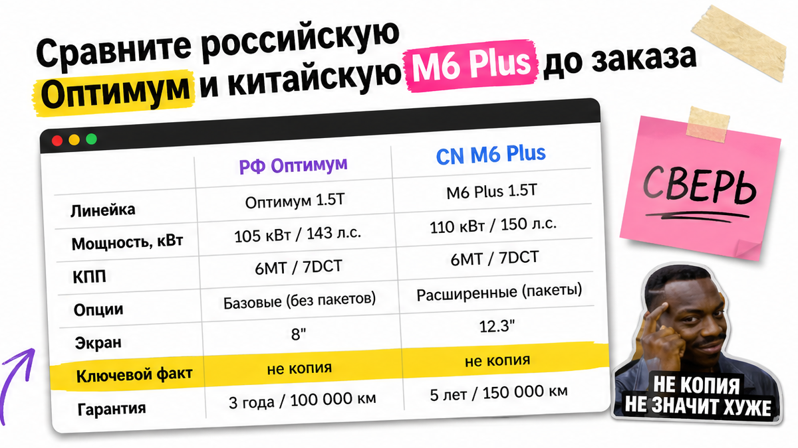
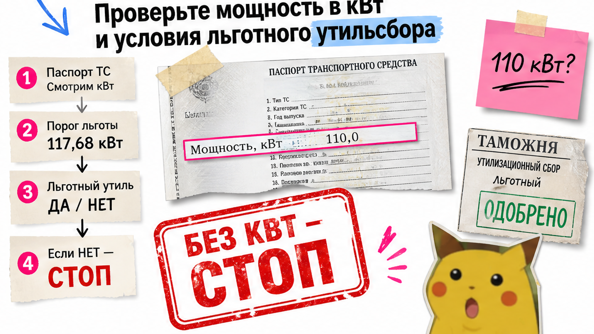
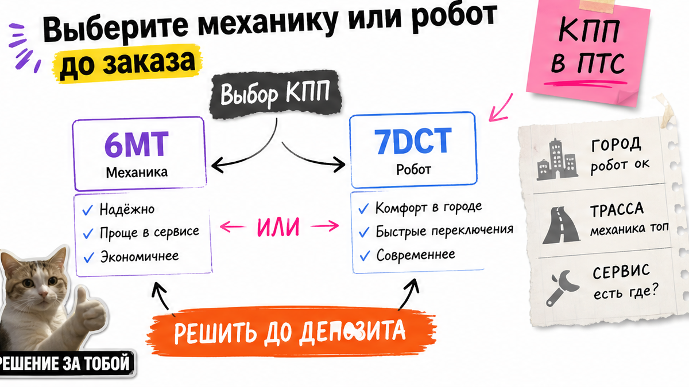

Аня из Тюмени увидела "Haval M6 Plus максималка, кожа, люк" заметно дешевле дилера и внесла депозит "чтобы не увели". После прихода выяснилось: средняя комплектация без круиза, меню на китайском, заводской гарантии РФ нет, а кВт в паспорте она не сверила. Боль знакомая – отдать деньги на красивое объявление. Стоп-правило: депозит только после чеклиста по лоту. Ниже – как выбрать хавал м6 из китая без сюрприза.
TL;DR / Быстрый инсайт: Китайская Haval M6 Plus – не российская "Оптимум" с другим ценником. До депозита сверьте мощность в кВт (типично 110 кВт у GW4G15M – кандидат на льготный утиль при ввозе для себя), коробку 6MT или 7DCT, 8–12 опций по фото и язык мультимедиа. Слово "максималка" игнорируйте. Депозит – только когда чеклист зелёный.
В 2026 в РФ M6 продают в линейке "Оптимум", а из Китая чаще едут остатки и пробежные M6 Plus с другим экраном и другим набором опций. На пальцах: вы покупаете лот с документами, а не "год с баннера". Карточку модели на CN-сайте бренда уже легко "потерять", лоты при этом есть – смотрите бумагу на машину.
Мы в Авто-Сейлс во Владивостоке сначала собираем факты по лоту, потом говорим про деньги. Не путайте M6 с другими кроссоверами бренда – ниже только Haval M6 / M6 Plus. Цель простая: осознанное "да/нет" по одному лоту до первого платежа.

Типичная ошибка новичка – ждать от китайского лота всё из рекламы РФ-дилера: экран 12,3 дюйма, боковые подушки "как в обзоре", привычное русское меню. На практике M6 Plus часто богаче люком и кожей, но это другая рыночная версия без заводской гарантии РФ.
| Параметр | РФ Haval M6 "Оптимум" | Китай M6 Plus (лоты) |
|---|---|---|
| Линейка | Одна комплектация Оптимум | Несколько версий (Elite / Luxury / Supreme и аналоги) |
| Мотор (ориентир) | 1.5, около 143 л.с. | Часто GW4G15M 1.5, 110 кВт / ~150 л.с., 218 Н·м |
| Коробка | 6MT или 7DCT | Те же типы – смотрите конкретный лот |
| Опции | Фиксированный пакет РФ | Люк, кожа, хром – не у каждой машины |
| Медиа и гарантия | Русский интерфейс, гарантия РФ | Часто китайское меню; гарантия РФ не действует |
Кому подходит M6 из Китая: компактный семейный кроссовер с акцентом на цену и багажник, и вы готовы проверить лот. Если ждёте "как у дилера без нюансов" – сценарий другой.
Сделайте так: выпишите "что важно мне" и сверяйте с лотом. Не делайте: считать китайскую "максималку" копией Оптимум. Ориентир РРЦ РФ на Drom для 2026 (около 2,1–2,35 млн ₽ за Оптимум MT/DCT) – только для сравнения с дилером, не цена лота из КНР.

Свежий факт: у китайской M6 Plus 1,5 л / 110 кВт льготный утильсбор для физлица реально доступен – редкость среди кроссоверов Haval из Китая. Льгота не "вшита в название": нужны документы на VIN.
Порог: мощность не выше 117,68 кВт. Плюс ввоз "для себя" без продажи в срок, который действует на дату растаможки (в обзорах 2026 часто 12 месяцев). Суммы утиля и пошлин здесь не публикуем – считают под лот. Калькулятор "с форума" легко врёт на одной строке документов.
Сделайте так: депозит только после цифры кВт. Не делайте: верить фразе "у M6 всегда льготный утиль" без бумаги. Проверьте кВт ещё раз перед бронью.

В лотах встречаются 6MT (механика) и 7DCT (робот). На пальцах: механика проще в сервисе, робот удобнее в пробках, но просит спокойный стиль и регламент масла. На практике на клубах жалуются на толчки 7DCT на холоде и в городе – не приговор каждой коробке, но повод выбрать осознанно.
Основной маршрут – двор, школа и пробки, а возиться с роботом не хотите? Честно смотрите механику. Робот уже выбран – заложите регламент и терпение на адаптацию.
Сделайте так: запишите сценарий езды и выберите КПП до депозита. Избегайте брать "что осталось в красивом цвете", а потом удивляться рывкам.
В объявлении "максималка" часто врёт. Например, пишут "кожа и люк", а круиза, бесключевого доступа или нормальной камеры нет. Отметьте по каждому пункту "есть / нет / не видно" – прямо в чате с поставщиком.
Имена вроде Urban / Tech / Premium удобны как карта для новичка, но в Китае ярлыки другие. Важны галочки, не маркетинг. Нет на фото – просите дополнительные кадры до оплаты. В реальном проекте так отсеивают половину "слишком красивых" объявлений.
Сделайте так: 8–12 пунктов сверки до депозита. Не делайте: платить из-за слова в заголовке. Используйте фото как первичный источник, текст объявления – вторичный.
После прихода многие впервые видят меню иероглифами. Русификация возможна через сторонние решения, но перевод меню не равен Apple CarPlay или Android Auto "как в рекламе". Заложите время и бюджет на доработку мультимедиа заранее.
Заводская гарантия РФ на такой импорт не действует. Спросите до депозита: кто обслуживает машину, где брать расходники, что входит в смету по ЭПТС и СБКТС. На пальцах: это документы учёта и сертификации – без них машину на учёт не поставить.
Сделайте так: получите письменный ответ про язык ГУ, русификацию и сервис. Не делайте: надеяться, что "на месте разберёмся" после перевода денег.
Хотите машину "почти с завода"? Проверьте правило учёта в Китае около 180 дней. Если срок короче – нужно письмо завода. Иначе экспорт могут остановить уже на этапе вывоза. Проверка скучная, но дешевле сорванного заказа.
Схема workflow до депозита:
Лот M6 / M6 Plus → кВт и код мотора → опции по фото → КПП (6MT / 7DCT) → язык ГУ и гарантия → ЭПТС/СБКТС в смете → расчёт под ключ → депозит
Сделайте так: стоп по любому красному флагу. Избегайте ускорять оплату из страха упустить лот – часто так торопят мимо проверки.
Критерий результата: в блокноте или чате заполнен чеклист по одному конкретному лоту. Депозит не переведён, пока хотя бы один пункт красный. После зелёного списка вы либо окнете лот, либо отправите его на расчёт под ключ.
Актуальные лоты и расчёт под ключ смотрите в каталоге avto-sales125.ru. Уточнения по конкретному VIN – в Telegram avtosales125.
Материал проверен: Редакция Авто-Сейлс (Владивосток) – эксперты по авто под заказ из Японии, Кореи и Китая.
Опора по фактам темы: официальная линейка Оптимум на haval.ru; конфиги CN M6 Plus в PCAuto и Gasgoo; порог 117,68 кВт в разборах растаможки; обзор рисков импорта от 28.10.2026; ветки клубов по русификации ГУ и 7DCT. Итоговые платежи – только расчёт под лот в каталоге.
В РФ ориентир – 1.5 около 143 л.с. У китайской M6 Plus часто встречается GW4G15M 1.5 на 110 кВт (~150 л.с.) и 218 Н·м. До депозита смотрите кВт в документах лота, а не "лошади" из заголовка.
Оптимум – российская линейка с фиксированным пакетом. Plus и близкие CN-версии – другой экран и набор опций, без заводской гарантии РФ. Family в рекламе не заменяет сверку фото и VIN-карточки.
Для простого сервиса чаще берут 6MT. 7DCT удобнее в городе, но нужен регламент и спокойный стиль. Фиксируйте выбор до заказа, не после приезда.
Кандидат – типичная M6 Plus 110 кВт, если в документах ≤117,68 кВт и вы ввозите для себя без быстрой перепродажи. Подтверждение – только по бумагам лота; суммы считает менеджер.
Часто да: штатное меню китайское. Уточните стоимость и способ до депозита. Перевод интерфейса не гарантирует CarPlay/Android Auto.
Только когда чеклист по лоту зелёный: кВт, КПП, опции, язык ГУ, строки сметы. Иначе другой лот или отказ. Нужен подбор под ключ – откройте каталог Авто-Сейлс до перевода денег.